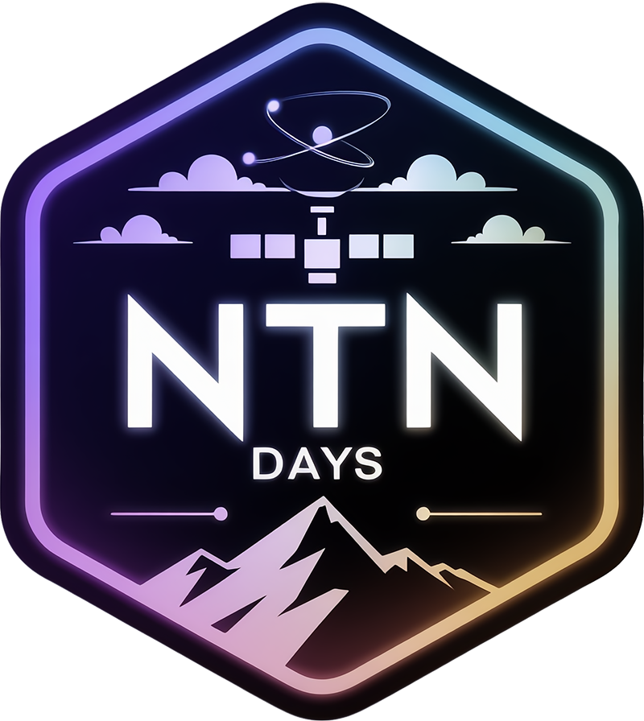

NTN Days 2026
Non-Terrestrial Networks
Bridging Space, Air, and Ground
Vania Conan · Pengwenlong Gu (Cnam) · Juan A. Fraire (Inria)
Two days, one community
Vania Conan
Cnam, CEDRIC
Pengwenlong Gu
Cnam, CEDRIC
Juan A. Fraire
Inria, INSA Lyon
Hosted by the Cnam, with the support of GDR RSD and GDR IASIS. Attendance is free, and it stays that way because our hosts and the GDRs carry the cost.
Fourth edition
IRIT, ENSEEIHT
LAAS-CNRS
Cnam
The meeting point of the French NTN community, academic and industrial, from the physical layer to networking, standardization and regulation.
In numbers
Registrations closed on October 9. Labs, operators, manufacturers, agencies and the European Commission are all in the room.
Today
- 09:00Opening · you are here
- 09:15Keynote 1 · Hassan Fawaz · Univity
- 10:00Coffee break
- 10:30Session 1 · Programmes, access, interference and spectrum · 6 talks
- 12:00Lunch · posters on display
- 13:30Session 2 · Waveforms and access for satellite IoT · 5 talks
- 14:45Coffee break
- 15:15Poster session and demos
- 16:30Day 1 wrap-up
Tomorrow
- 08:30Breakfast
- 09:00Keynote 2 · François Baccelli · Inria, Télécom Paris, LINCS
- 09:45Coffee break
- 10:15Session 3 · Constellation dynamics, emulation and orbital computing · 5 talks
- 11:30Lunch
- 13:00Session 4 · Small satellites, DTN and the Solar System Internet · 5 talks
- 14:15Break
- 14:40Roundtable
- 15:40Closing · room free at 16:00
Two views of the field
Today 09:15
Hassan Fawaz
Univity
From Vision to Validation: Univity's 5G NTN Journey
Tomorrow 09:00
François Baccelli
Inria, Télécom Paris, LINCS
Research on Non-Terrestrial Networks: Design Tools, Regulation, and Cooperation
An operator building a constellation, and the mathematics and regulation behind the constellations we all study.
Student posters and demos
- PosterMiguel Filipe
· LAAS-CNRS
Breaking the GNSS dependency in direct-to-satellite cellular networks - PosterFlorian Rolland
· LAAS-CNRS
TDMA for GNSS-free direct-to-satellite LPWAN - PosterAli Srour
· Cnam
Energy-aware adaptive processing management for Open RAN UxNBs - PosterYanis Maatouk
· Sorbonne Université
Geolocating Starlink users from RTT timing, behind a VPN - DemoStefano Taborelli
· Cnam
OCUDU-SkyLink: multi-connectivity in space-terrestrial 6G networks
Boards are up in the coffee area for the whole of today. The presenters are PhD and master students, so give them your hardest questions.
NTN: time to move from theory to implementation
Hassan Fawaz
Univity
François Baccelli
Inria, Télécom Paris, LINCS
Christelle Caillouet
Université Côte d'Azur, I3S, Inria
Isabelle Bucaille
Thales
One hour of discussion with four panellists, moderated by Pengwenlong Gu. Bring your questions during the two days, we will feed them to the panel.
How we run the two days
- 15 minutes per talk, 12 of presentation and 3 of questions. The chairs keep time, and they will be strict: 21 talks leave no slack.
- One laptop for all talks. If we do not have your slides yet, find us during the next break, PDF preferred.
- Coffee and lunch are served just outside the amphitheatre, where the posters are. Use the breaks, they are part of the program.
- Amphithéâtre Jean-Baptiste Say, access Y, lower level. The registration desk is at the door.
- ntndays.space carries the full program, the abstracts and a calendar file for your phone.
A working group for NTN
- The GDR RSD is creating a GT NTN, and these journées become its annual event.
- The group will be led collectively, across sites. If you want to take part in the coordination, talk to us during the two days.
- NTN Days 2027 goes to Rennes, carried by Georgios Z. Papadopoulos (IMT Atlantique).
gdr-rsd.cnrs.fr
Who makes this possible
And the Cnam staff who opened the building, set up the room and fed a hundred people for two days.
Enjoy the two days
Program, abstracts and calendar file
ntndays.space
Questions, problems, ideas: find Vania, Peng or Juan at the desk.